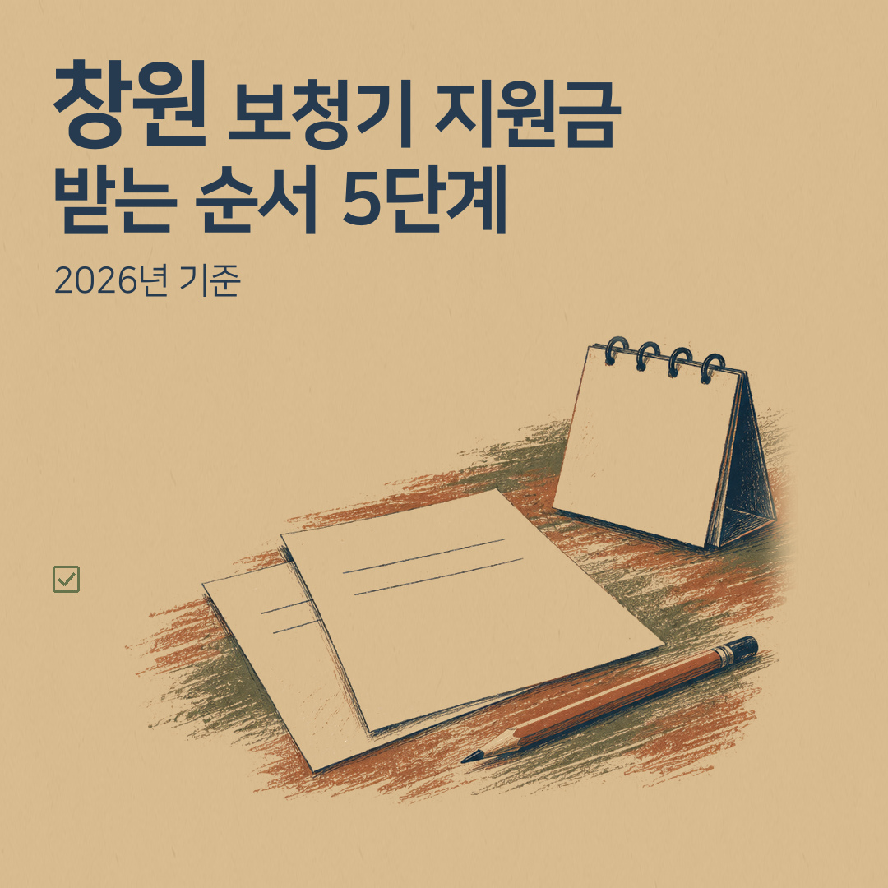
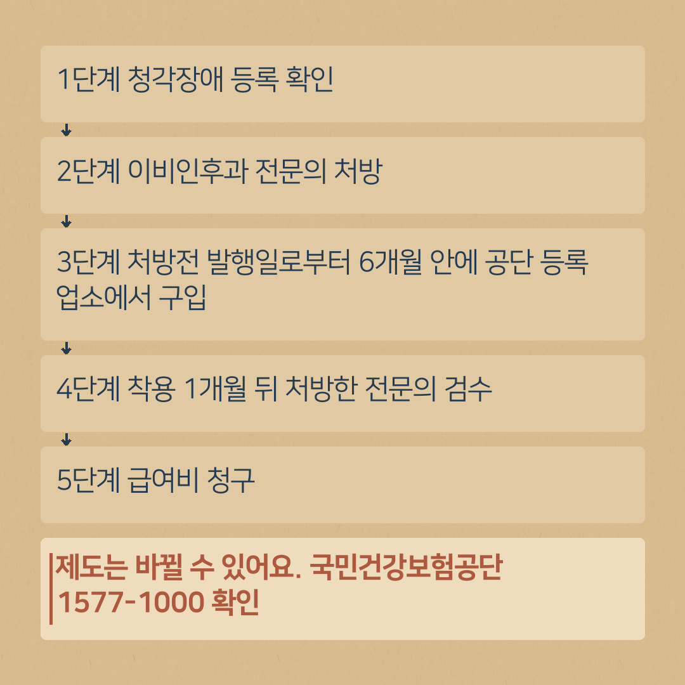
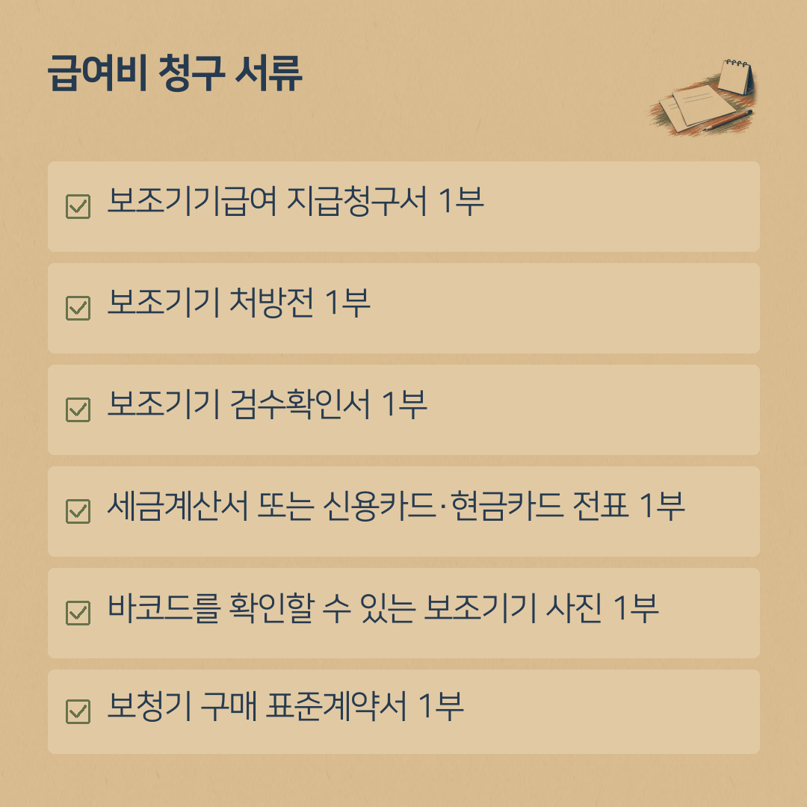

보청기 지원금 받는 순서 5단계와 청구 서류 체크리스트 (2026년 기준)
- 대상: 청각장애로 등록된 건강보험 가입자·피부양자 + 이비인후과 전문의가 보청기가 일상생활에 도움이 된다고 판단한 경우
- 금액: 기준액 131만 원(내구연한 5년). 공단은 기준액과 구입금액 중 낮은 금액의 90%를 지급(차상위 본인부담경감 대상자 등 100%)
- 순서: 장애 등록 확인 → 전문의 처방 → 처방전 발행일로부터 6개월 안에 공단 등록 업소에서 구입 → 착용 1개월 뒤 검수 → 급여비 청구
- 청구 서류 6가지: 지급청구서, 처방전, 검수확인서, 세금계산서 또는 카드 전표, 바코드 사진, 표준계약서

보청기 상담에서 가장 자주 받는 질문이 "지원금은 어떻게 받아요?"입니다. 서류 이름이 낯설고 병원·매장·공단을 오가야 해서 처음에는 복잡하게 느껴지실 수 있습니다.
이 글은 국민건강보험공단이 공개한 기준에 맞춰 순서를 5단계로 정리한 것입니다. 단계마다 체크하면서 따라오시면 됩니다.
이 글은 국민건강보험 「장애인보조기기 급여(보청기)」 기준입니다. 산재보험·의료급여 등은 기준이 다를 수 있습니다.
먼저 알아 두실 숫자: 기준액 131만 원, 내구연한 5년, 공단 부담 90%
- 기준액 1,310,000원 · 내구연한 5년 — 공단의 「장애인보조기기 품목별 기준액 및 내구연한」 표에 나온 숫자입니다.
- 공단 부담금액 — 기준액과 실제 구입금액 중 낮은 금액의 90%입니다. 차상위 본인부담경감 대상자 등은 100%입니다.
- 횟수 — 같은 보조기기는 내구연한(보청기 5년) 안에 1인당 1회 지급됩니다.
기준액은 판매 가격이 아니라 제도에서 정한 기준 금액입니다. 예를 들어 구입금액이 131만 원 이상이면 일반 가입자는 131만 원의 90%인 117만 9천 원을 받습니다. 구입금액이 131만 원보다 낮으면 그 구입금액의 90%입니다.
의료급여 수급자 등은 기준이 다를 수 있습니다. 내 경우가 정확히 얼마인지는 국민건강보험공단(1577-1000)에 확인하시는 것이 가장 정확합니다.
1단계. 청각장애 등록이 되어 있는지 확인
건강보험 보청기 급여는 등록된 청각장애인(청력장애)이 대상입니다. 여기에 보청기 사용이 일상생활에 도움이 된다고 이비인후과 전문의가 판단해야 합니다(공단 기준).
- 이미 복지카드가 있으시면 → 2단계로 가시면 됩니다.
- 아직 등록 전이시면 → 장애 등록 절차를 먼저 밟으셔야 합니다. 신청은 주소지 주민센터에서 하고, 자세한 절차는 주민센터나 보건복지부 안내로 확인하시는 것이 정확합니다.
- 복지카드(또는 장애인 등록 확인 서류)가 있다
2단계. 이비인후과 전문의에게 보청기 처방 받기
보청기 처방은 이비인후과 전문의가 합니다. 병원은 편한 곳으로 정하시면 됩니다.
공단 기준에는 처방할 때 양쪽 귀 청력검사(고막과 바깥귀길 상태, 평균순음청력역치, 말소리명료도)를 하고 검사결과지를 첨부하게 되어 있습니다.
기본은 한쪽 지원이고, 양쪽 지원은 나이·청력 조건 등 공단이 정한 별도 요건을 모두 충족해야 합니다. 해당 여부는 처방 단계에서 확인됩니다.
- 보조기기 처방전을 받았다
- 처방전 발행일을 달력에 적어 두었다 (3단계에서 꼭 필요합니다)
3단계. 처방전 발행일로부터 6개월 안에, 공단 등록 업소에서 구입
여기서 놓치시는 분이 많습니다.
- 처방전 발행일로부터 6개월 이내에 구입한 보조기기만 급여가 됩니다.
- 보청기는 공단에 등록한 업소에서 구입하셔야 합니다.
- 구입할 때 「보청기 구매 표준계약서」를 씁니다. 청구 서류에 들어갑니다.
상담 예약을 하실 때 처방전 발행일을 알려 주시면, 남은 기간에 맞춰 상담과 맞춤 일정을 먼저 잡아 드립니다. 날짜 계산은 처방전 6개월 날짜 계산법에 따로 정리했습니다.
- 발행일로부터 6개월이 지나지 않았다
- 표준계약서를 받았다
- 세금계산서 또는 카드 전표(거래명세서 포함)를 받았다

4단계. 착용 1개월 뒤, 처방한 전문의에게 검수 받기
보청기를 받고 바로 끝나는 것이 아닙니다. 공단 기준은 "보청기 착용 1개월 이후에 음장검사를 통한 검수확인"을 받도록 하고 있습니다. 처방을 받은 그 전문의에게 받는 검사입니다. 검수 결과 청력 개선 효과가 있다고 판단되면 급여가 됩니다(공단 기준 문구).
그래서 첫 한 달 동안은 보청기를 꾸준히 끼시는 것이 중요합니다. 불편한 점이 있으면 참지 마시고 그 사이에 매장에 오셔서 조절을 받으세요.
- 착용 시작일로부터 1개월이 지났다
- 보조기기 검수확인서를 받았다
5단계. 보청기 급여비 청구 — 서류 체크리스트
공단 안내에 나온 청구 서류입니다. 한 장씩 확인해 보세요.
- 보조기기급여 지급청구서 1부
- 보조기기 처방전 1부
- 보조기기 검수확인서 1부
- 세금계산서 또는 신용카드·현금카드 전표 1부 (카드 전표는 거래명세서 포함)
- 바코드를 확인할 수 있는 보조기기 사진 1부
- 보청기 구매 표준계약서 1부
서식은 국민건강보험공단 홈페이지 「보조기기별 지급기준 > 보청기」 화면에서 내려받을 수 있습니다. 귀인보청기에서는 구입 후 서류를 하나씩 같이 확인해 드립니다.

구입 뒤에도 이어집니다: 후기적합관리
보청기를 구입하고 1년이 지난 때부터는 매년 1회 이상 「후기적합관리」를 받으면 급여비가 지급될 수 있습니다(공단 기준). 구입일로부터 1년이 지난 날 이후로 매년 점검 날짜를 잡아 두시면 좋습니다. 자세한 내용은 후기적합관리 안내를 참고하세요.
상담 오실 때 챙기면 좋은 것
- 복지카드
- 보조기기 처방전 (발행일 확인)
- 청력검사 결과지
- 쓰시던 보청기가 있으면 함께
창원 진해·용원·웅동에서는 진해센터(자은동 하이존빌딩)로, 부산 강서 쪽이시면 명지서비스센터로 전화 예약 후 방문해 주세요.
제도는 바뀔 수 있습니다. 신청 전에 국민건강보험공단 홈페이지나 1577-1000에서 한 번 더 확인해 주세요.
상담 예약
전화 010-6599-0109 또는 0507-1426-0116 (두 센터 공통)
진해센터 경남 창원시 진해구 진해대로 999, 하이존빌딩 1층 108호(자은동) · 하이존 상가 지하주차장
명지서비스센터 부산 강서구 명지국제6로 99, A동 1070호 · 대방디엠시티 상가주차장
운영시간: 평일 08:30–18:30, 토요일 08:30–13:00, 일요일 휴무 · 예약 후 방문해 주세요. 오시는 길 보기
네이버 블로그에서도 보기: 귀인보청기 블로그 · English version